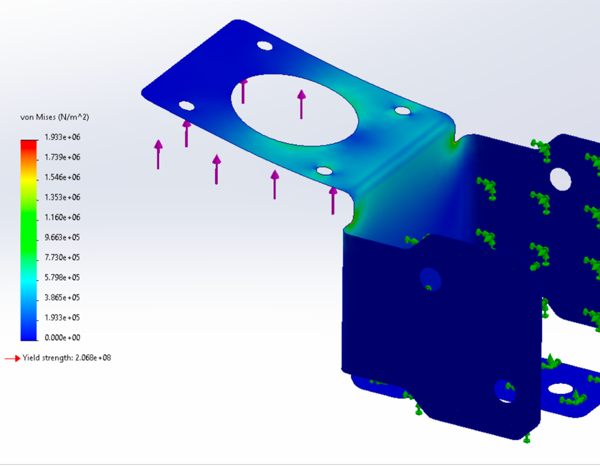
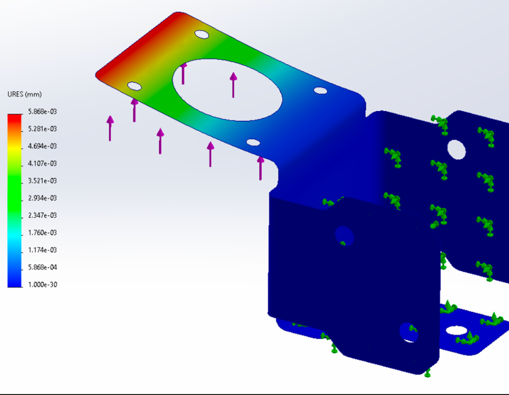
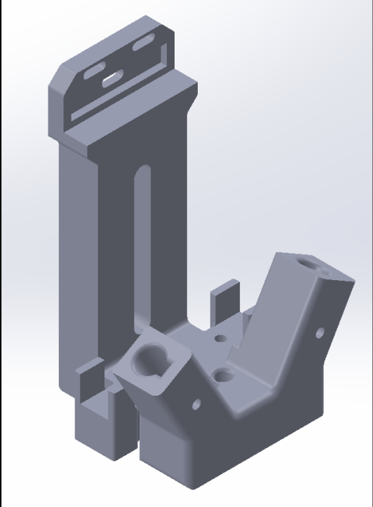

Capstone Project: Automated Spot Welder Gantry System
Overview
Background
- Market Gap: Current spot welding options force a tradeoff between cheap handheld units ($170–$280) that rely on manual probe placement and industrial CNC systems ($2,000–$5,000+) that are out of reach for DIY builders, makerspaces, and university engineering teams.
- User Frustrations: Survey data from target users revealed that 91.7% currently rely on handheld welders, with 75% reporting poor weld consistency/alignment and 50% citing manual fatigue.
- Objective: Develop a $1,000 automated gantry system providing sub-millimeter precision and hands-free pattern execution for repetitive weld sequences.
Approach
- Concept Selection: Evaluated four system concepts using a Pugh screening matrix. Selected the Cartesian gantry concept due to improved controllability, reduced cost, and manufacturing simplicity.
- Hardware Architecture: 2020 aluminum frame, NEMA 17 stepper motors (XY-axis is belt-driven, Z-axis is a dual lead-screw), and load cell to sense probe contact forces.
- Controls & Software: Used an Arduino (GRBL) and Raspberry Pi 5 to handle Xbox controller input, live camera targeting, load cell Z-axis contact force sensing, and waypoint storage/replay for automated weld sequences.
Target Specifications
- Budget: $1,000
- Workspace Size: 12×12"
- Positional Accuracy: ±0.25mm XY tolerance.
- Execution Speed: <10s from command to weld.
- Automation & Targeting: Real-time top-down camera targeting and multi-point weld pattern storage/replay.
Engineering Analysis




Motor Sizing
- MATLAB Simulation Model: Takes the torque-speed curve of a candidate motor and evaluates it against key parameters such as the system's moving mass, travel distance, maximum acceleration, and target velocity (all taken from target specifications), to determine if the motor's output capability is sufficient to meet our motion profile.
- Motor Selection: Selected NEMA 17 1.5A 45Ncm stepper motors for the XY-axes, and NEMA 17 0.4A 26Ncm stepper motors for the Z-axis. These motors met our motion requirements while fitting within our budget and providing a small safety margin within the torque curve.
- Hardware Validation: Physical testing successfully validated the model, with a measured average travel time of 2.31 seconds compared to the simulated 2.322 seconds for a 200mm commanded distance.
Z-Axis Motor Bracket FEA Validation
- Identified Failure Mode: Any deformation under load of the motor bracket could cause the two Z motors to fall out of sync if the deflection causes once motor to advance one full step before the other (0.04mm).
- Loading Conditions: Worst-case scenario of 1.6 kg of mass moving at 0.15 m/s². Motor brackets are manufactured from 304 stainless steel.
- Stress Analysis: Peak stress is approximately two orders of magnitude below the material's yield strength, indicating no risk of permanent deformation..
- Deflection Analysis: Maximum deflection of 0.00005 mm, which is three orders of magnitude below the motor step size.
- Conclusion: Motor bracket deformation will have no meaningful effect on Z-axis synchronization and the mounting hardware is sufficient for this application.
Design for Manufacturing and Proposed Mass-Manufacturing Alternatives


Bent Sheet Metal
- Utilized sheet metal bending to create the motor mounting brackets due to the high cost-to-strength ratio while keeping the overall profile of the part small.
- Some features for manufacturing include clearances from bent faces to edges and minimum hole to edge distances.
- Proposed Mass-Manufacturing Process: These brackets where bent on a manual sheet metal brake. The industry standard for mass manufacturing this type of geometry is a press and die, which would reduce the per-unit cost from upwards of $20/pc to cents.
3D Printed Parts
- Many supporting parts and key components were fabricated via FDM 3D printing. Some examples include the toolhead, load-cell interface, belt clamps, chain mounts, and cable guides.
- Proposed Mass-Manufacturing Process: The most reasonable process would be injection molding. However, most components would require major DFM changes. Injection molding enables the use ofa wider range of materials, many of which are much more performant than the plastics available in 3D-printing, and would significantly reduce the per-unit cost.


Results
System Performance
- Positional Accuracy: 15 trials averaged an absolute error of 0.15mm. There was a trend of increasing error at longer commanded distances, which suggests minor accumulated positioning error due to belt stretch or micro-stepping loss over longer moves.
- Outlier Analysis: Trial 9 (-0.8mm) fell outside the ±0.25mm target range. The substantial error was likely due to belt-slip caused by commanding the system to move a large distance at maximum acceleration. In the future, this positional error could be resolved by incorporating closed-loop encoder feedback and stiffer belts.


My Role
Team Size: 4 Engineers | My Contributions:
- Mechanical Design: Designed gantry frame, XYZ-axis motor mounts, belt routing, and tensioning systems.
- Software Integration: Wrote custom video streaming code to enable the live digital crosshair targeting system.
- Testing & Validation: Wrote motor simulation script to validate motor sizing. Conducted positional accuracy testing and analysis.
- Systems Engineering: Conducted interviews and formally defined stakeholder needs, target specifications, and the detailed design architecture.